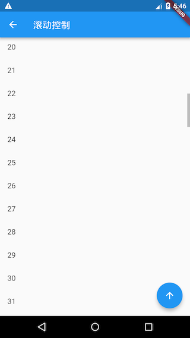
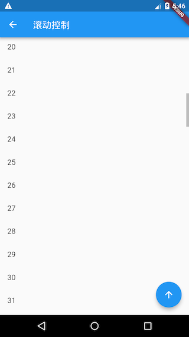

6.4 滚动监听及控制
在前几节中，我们介绍了Flutter中常用的可滚动组件，也说过可以用ScrollController来控制可滚动组件的滚动位置，本节先介绍一下ScrollController，然后以ListView为例，展示一下ScrollController的具体用法。最后，再介绍一下路由切换时如何来保存滚动位置。
6.4.1 ScrollController
ScrollController构造函数如下：
ScrollController({
double initialScrollOffset = 0.0, //初始滚动位置
this.keepScrollOffset = true,//是否保存滚动位置
...
})
我们介绍一下ScrollController常用的属性和方法：
offset：可滚动组件当前的滚动位置。jumpTo(double offset)、animateTo(double offset,...)：这两个方法用于跳转到指定的位置，它们不同之处在于，后者在跳转时会执行一个动画，而前者不会。
ScrollController还有一些属性和方法，我们将在后面原理部分解释。
1. 滚动监听
ScrollController间接继承自Listenable，我们可以根据ScrollController来监听滚动事件，如：
controller.addListener(()=>print(controller.offset))
2. 实例
我们创建一个ListView，当滚动位置发生变化时，我们先打印出当前滚动位置，然后判断当前位置是否超过1000像素，如果超过则在屏幕右下角显示一个“返回顶部”的按钮，该按钮点击后可以使ListView恢复到初始位置；如果没有超过1000像素，则隐藏“返回顶部”按钮。代码如下：
class ScrollControllerTestRoute extends StatefulWidget {
@override
ScrollControllerTestRouteState createState() {
return ScrollControllerTestRouteState();
}
}
class ScrollControllerTestRouteState extends State<ScrollControllerTestRoute> {
ScrollController _controller = ScrollController();
bool showToTopBtn = false; //是否显示“返回到顶部”按钮
@override
void initState() {
super.initState();
//监听滚动事件，打印滚动位置
_controller.addListener(() {
print(_controller.offset); //打印滚动位置
if (_controller.offset < 1000 && showToTopBtn) {
setState(() {
showToTopBtn = false;
});
} else if (_controller.offset >= 1000 && showToTopBtn == false) {
setState(() {
showToTopBtn = true;
});
}
});
}
@override
void dispose() {
//为了避免内存泄露，需要调用_controller.dispose
_controller.dispose();
super.dispose();
}
@override
Widget build(BuildContext context) {
return Scaffold(
appBar: AppBar(title: Text("滚动控制")),
body: Scrollbar(
child: ListView.builder(
itemCount: 100,
itemExtent: 50.0, //列表项高度固定时，显式指定高度是一个好习惯(性能消耗小)
controller: _controller,
itemBuilder: (context, index) {
return ListTile(title: Text("$index"),);
}
),
),
floatingActionButton: !showToTopBtn ? null : FloatingActionButton(
child: Icon(Icons.arrow_upward),
onPressed: () {
//返回到顶部时执行动画
_controller.animateTo(
.0,
duration: Duration(milliseconds: 200),
curve: Curves.ease,
);
}
),
);
}
}
代码说明已经包含在注释里，运行效果如图6-10、6-11所示：
 

由于列表项高度为 50 像素，当滑动到第 20 个列表项后，右下角 “返回顶部” 按钮会显示，点击该按钮，ListView 会在返回顶部的过程中执行一个滚动动画，动画时间是 200 毫秒，动画曲线是 Curves.ease，关于动画的详细内容我们将在后面“动画”一章中详细介绍。
3. 滚动位置恢复
PageStorage是一个用于保存页面(路由)相关数据的组件，它并不会影响子树的UI外观，其实，PageStorage是一个功能型组件，它拥有一个存储桶（bucket），子树中的Widget可以通过指定不同的PageStorageKey来存储各自的数据或状态。
每次滚动结束，可滚动组件都会将滚动位置offset存储到PageStorage中，当可滚动组件重新创建时再恢复。如果ScrollController.keepScrollOffset为false，则滚动位置将不会被存储，可滚动组件重新创建时会使用ScrollController.initialScrollOffset；ScrollController.keepScrollOffset为true时，可滚动组件在第一次创建时，会滚动到initialScrollOffset处，因为这时还没有存储过滚动位置。在接下来的滚动中就会存储、恢复滚动位置，而initialScrollOffset会被忽略。
当一个路由中包含多个可滚动组件时，如果你发现在进行一些跳转或切换操作后，滚动位置不能正确恢复，这时你可以通过显式指定PageStorageKey来分别跟踪不同的可滚动组件的位置，如：
ListView(key: PageStorageKey(1), ... );
...
ListView(key: PageStorageKey(2), ... );
不同的PageStorageKey，需要不同的值，这样才可以为不同可滚动组件保存其滚动位置。
注意：一个路由中包含多个可滚动组件时，如果要分别跟踪它们的滚动位置，并非一定就得给他们分别提供
PageStorageKey。这是因为Scrollable本身是一个StatefulWidget，它的状态中也会保存当前滚动位置，所以，只要可滚动组件本身没有被从树上移除（detach），那么其State就不会销毁(dispose)，滚动位置就不会丢失。只有当Widget发生结构变化，导致可滚动组件的State销毁或重新构建时才会丢失状态，这种情况就需要显式指定PageStorageKey，通过PageStorage来存储滚动位置，一个典型的场景是在使用TabBarView时，在Tab发生切换时，Tab页中的可滚动组件的State就会销毁，这时如果想恢复滚动位置就需要指定PageStorageKey。
4. ScrollPosition
ScrollPosition是用来保存可滚动组件的滚动位置的。一个ScrollController对象可以同时被多个可滚动组件使用，ScrollController会为每一个可滚动组件创建一个ScrollPosition对象，这些ScrollPosition保存在ScrollController的positions属性中（List<ScrollPosition>）。ScrollPosition是真正保存滑动位置信息的对象，offset只是一个便捷属性：
double get offset => position.pixels;
一个ScrollController虽然可以对应多个可滚动组件，但是有一些操作，如读取滚动位置offset，则需要一对一！但是我们仍然可以在一对多的情况下，通过其他方法读取滚动位置，举个例子，假设一个ScrollController同时被两个可滚动组件使用，那么我们可以通过如下方式分别读取他们的滚动位置：
...
controller.positions.elementAt(0).pixels
controller.positions.elementAt(1).pixels
...
我们可以通过controller.positions.length来确定controller被几个可滚动组件使用。
ScrollPosition的方法
ScrollPosition有两个常用方法：animateTo() 和 jumpTo()，它们是真正来控制跳转滚动位置的方法，ScrollController的这两个同名方法，内部最终都会调用ScrollPosition的。
5. ScrollController控制原理
我们来介绍一下ScrollController的另外三个方法：
ScrollPosition createScrollPosition(
ScrollPhysics physics,
ScrollContext context,
ScrollPosition oldPosition);
void attach(ScrollPosition position) ;
void detach(ScrollPosition position) ;
当ScrollController和可滚动组件关联时，可滚动组件首先会调用ScrollController的createScrollPosition()方法来创建一个ScrollPosition来存储滚动位置信息，接着，可滚动组件会调用attach()方法，将创建的ScrollPosition添加到ScrollController的positions属性中，这一步称为“注册位置”，只有注册后animateTo() 和 jumpTo()才可以被调用。
当可滚动组件销毁时，会调用ScrollController的detach()方法，将其ScrollPosition对象从ScrollController的positions属性中移除，这一步称为“注销位置”，注销后animateTo() 和 jumpTo() 将不能再被调用。
需要注意的是，ScrollController的animateTo() 和 jumpTo()内部会调用所有ScrollPosition的animateTo() 和 jumpTo()，以实现所有和该ScrollController关联的可滚动组件都滚动到指定的位置。
6.4.2 滚动监听
1. 滚动通知
Flutter Widget树中子Widget可以通过发送通知（Notification）与父(包括祖先)Widget通信。父级组件可以通过NotificationListener组件来监听自己关注的通知，这种通信方式类似于Web开发中浏览器的事件冒泡，我们在Flutter中沿用“冒泡”这个术语，关于通知冒泡我们将在后面“事件处理与通知”一章中详细介绍。
可滚动组件在滚动时会发送ScrollNotification类型的通知，ScrollBar正是通过监听滚动通知来实现的。通过NotificationListener监听滚动事件和通过ScrollController有两个主要的不同：
- NotificationListener可以在可滚动组件到widget树根之间任意位置监听。而
ScrollController只能和具体的可滚动组件关联后才可以。 - 收到滚动事件后获得的信息不同；
NotificationListener在收到滚动事件时，通知中会携带当前滚动位置和ViewPort的一些信息，而ScrollController只能获取当前滚动位置。
2. 实例
下面，我们监听ListView的滚动通知，然后显示当前滚动进度百分比：
import 'package:flutter/material.dart';
class ScrollNotificationTestRoute extends StatefulWidget {
@override
_ScrollNotificationTestRouteState createState() =>
_ScrollNotificationTestRouteState();
}
class _ScrollNotificationTestRouteState
extends State<ScrollNotificationTestRoute> {
String _progress = "0%"; //保存进度百分比
@override
Widget build(BuildContext context) {
return Scrollbar(
//进度条
// 监听滚动通知
child: NotificationListener<ScrollNotification>(
onNotification: (ScrollNotification notification) {
double progress = notification.metrics.pixels /
notification.metrics.maxScrollExtent;
//重新构建
setState(() {
_progress = "${(progress * 100).toInt()}%";
});
print("BottomEdge: ${notification.metrics.extentAfter == 0}");
return false;
//return true; //放开此行注释后，进度条将失效
},
child: Stack(
alignment: Alignment.center,
children: <Widget>[
ListView.builder(
itemCount: 100,
itemExtent: 50.0,
itemBuilder: (context, index) => ListTile(title: Text("$index")),
),
CircleAvatar(
//显示进度百分比
radius: 30.0,
child: Text(_progress),
backgroundColor: Colors.black54,
)
],
),
),
);
}
}
运行结果如图6-12所示：

在接收到滚动事件时，参数类型为ScrollNotification，它包括一个metrics属性，它的类型是ScrollMetrics，该属性包含当前ViewPort及滚动位置等信息：
pixels：当前滚动位置。maxScrollExtent：最大可滚动长度。extentBefore：滑出ViewPort顶部的长度；此示例中相当于顶部滑出屏幕上方的列表长度。extentInside：ViewPort内部长度；此示例中屏幕显示的列表部分的长度。extentAfter：列表中未滑入ViewPort部分的长度；此示例中列表底部未显示到屏幕范围部分的长度。atEdge：是否滑到了可滚动组件的边界（此示例中相当于列表顶或底部）。
ScrollMetrics还有一些其他属性，读者可以自行查阅API文档。